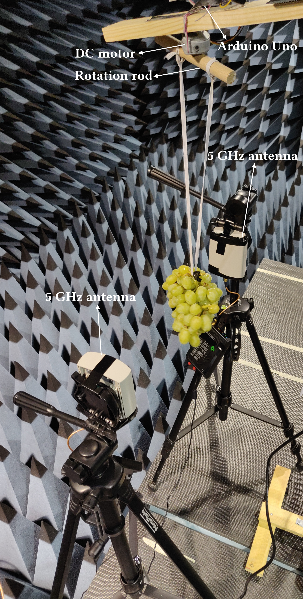

Precision agriculture can be realised through different technologies. This project aims to approach precision agriculture through the interaction between electromagnetic waves, specifically Radio Frequencies (RF), and different agricultural products. We label this interaction as RF Sensing. RF Sensing is a terminology describing how RF signals interact and monitor surrounding phenomena in a non-invasive manner. RF Sensing is a general concept, and in this project, we realise precision agriculture through RF Sensing. Specifically, we investigate the applicability of RF Sensing to estimate moisture content in agricultural products such as grapes. SING is the terminology we use to describe the sensing of grape moisture content through RF Sensing. Thus, SING is a perfect example of realising precision agriculture through RF Sensing.
SING importance stems from the fact that understanding the moisture level in grapes is vital for the scientific investigation in Pomology (the study of cultivation of fruits) and Oenology/Viticulture (the studies of grape agriculture). It provides valuable data about the health status of the crop as well as reliable yield estimation. Information about crop health can highlight deviations in growth behaviours that may indicate a problem in the vineyard, which can be dealt with promptly. Reliable yield estimation, on the other hand, enable viticulturists, for example, to make informed decisions about the labour and other materials (e.g., bottles) needed ahead of harvest season as well as feeding into precision agriculture systems.
Project Progress
Currently, SING if finished with the proof-of-concept stage. We have shown in a lab environment how SING precisely estimates moisture content to a high degree of accuracy (90\%). More information about this can be found in the paper we published in here.
Main Contributors
Primary Research Issues
- Electromagnetic field propagation
- Channel modelling
- Signal modelling

SING